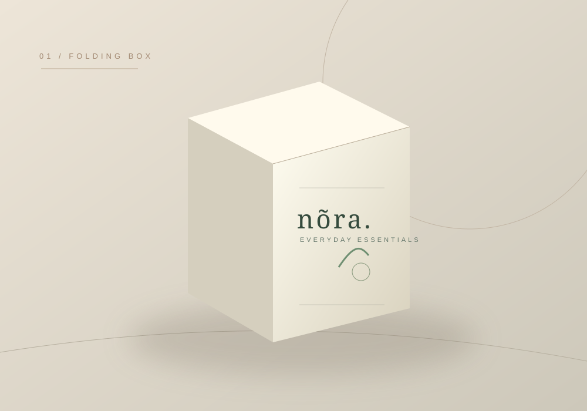

Kiểu hộp không chỉ quyết định diện mạo. Nó tác động trực tiếp đến thao tác đóng gói, kích thước bản trải, cảm giác mở hộp và mức độ an toàn của sản phẩm bên trong.
Chọn cấu trúc bằng cách hỏi: hộp cần làm gì?
Một sản phẩm bán lẻ cần xếp kệ gọn và đóng gói nhanh có thể ưu tiên hộp nắp gài. Một bộ quà tặng cần trải nghiệm mở nắp chậm rãi lại phù hợp hơn với hộp cứng. Đừng chọn hộp nam châm chỉ vì vẻ ngoài cao cấp nếu sản phẩm không cần đóng mở nhiều lần.
| Kiểu hộp | Tình huống nên cân nhắc | Điểm cần thử |
|---|---|---|
| Nắp gài | Hàng bán lẻ, mỹ phẩm, sản phẩm nhẹ đến vừa theo thiết kế | Đáy, tai gài, lực đóng mở |
| Âm dương | Quà tặng, bộ sản phẩm, trải nghiệm mở nắp riêng | Độ khít nắp và thân |
| Nam châm | Hộp quà cần đóng mở nhiều lần | Vị trí nam châm và độ bền bản lề |
| Ngăn kéo | Trang sức, quà nhỏ hoặc bộ sản phẩm có khay | Điểm cầm, hướng kéo, độ rơ |
01. Hộp nắp gài — thiết kế gọn và linh hoạt

Hộp nắp gài thường có thể giao theo dạng phẳng tùy cấu trúc, giúp thuận tiện cho khâu lưu trữ và lắp ráp. Điểm quan trọng là chiều cao nắp, tai gài, đường cấn và khả năng giữ đáy khi sản phẩm có trọng lượng.
Hãy nhờ xưởng dựng mẫu trắng để thử thao tác trước khi duyệt file in. Thiết kế đẹp trên bản trải nhưng khó gấp ở thực tế sẽ phát sinh chi phí vận hành.
02. Hộp cứng âm dương — khi mở hộp là một phần trải nghiệm
Hộp âm dương có nắp và thân tách rời. Cảm giác sử dụng phụ thuộc vào độ vừa vặn giữa hai phần, chất lượng bồi giấy, độ phẳng và khay giữ sản phẩm.
Đối với quà tặng gồm nhiều vật phẩm, nên thử tổng thể: có đủ chỗ cho thiệp, phụ kiện hoặc lớp đệm hay chưa; khi nhấc nắp các vật phẩm có bị xô lệch hay không.
03. Hộp nam châm — chú trọng chi tiết đóng mở
Nắp gập và điểm đóng bằng nam châm tạo cảm giác chắc chắn, phù hợp một số bộ quà cần tái sử dụng. Nhưng nắp, khớp gập và vị trí nam châm cần được kiểm tra trên mẫu thật. Hộp có nam châm cũng không tự động phù hợp với mọi sản phẩm hoặc mọi điều kiện vận chuyển.
04. Hộp ngăn kéo — trải nghiệm kéo mở có chủ đích
Kết cấu gồm vỏ ngoài và khay bên trong. Khi thử, nên kiểm tra hướng kéo, chỗ cầm, khoảng hở và khả năng khay bị trượt tự do. Sản phẩm nhỏ như phụ kiện hoặc trang sức có thể cần thêm lớp lót giữ vị trí.
Checklist thử mẫu kết cấu
- Cho sản phẩm thật vào và lắc nhẹ theo cách sử dụng dự kiến.
- Thử đóng mở nhiều lần để kiểm tra độ bền thao tác.
- Quan sát góc hộp, mép dán và vết gãy tại đường cấn.
- Kiểm tra cách xếp chồng, vận chuyển và đóng gói.
- Đối chiếu vị trí logo, tem niêm phong, mã vạch hoặc QR.
Gửi mẫu hộp để chọn phương án sản xuất
Nếu chưa chắc về kết cấu, hãy gửi ảnh mẫu, kích thước và sản phẩm thực tế. Bạn có thể tham khảo dịch vụ in hộp giấy Tân Hoa Mai để xem các kiểu hộp đang được giới thiệu và trao đổi phương án phù hợp với xưởng.
Form dáng tốt phải dùng được.
Đánh giá bằng mẫu thử, không chỉ bằng ảnh sản phẩm hoàn thiện.